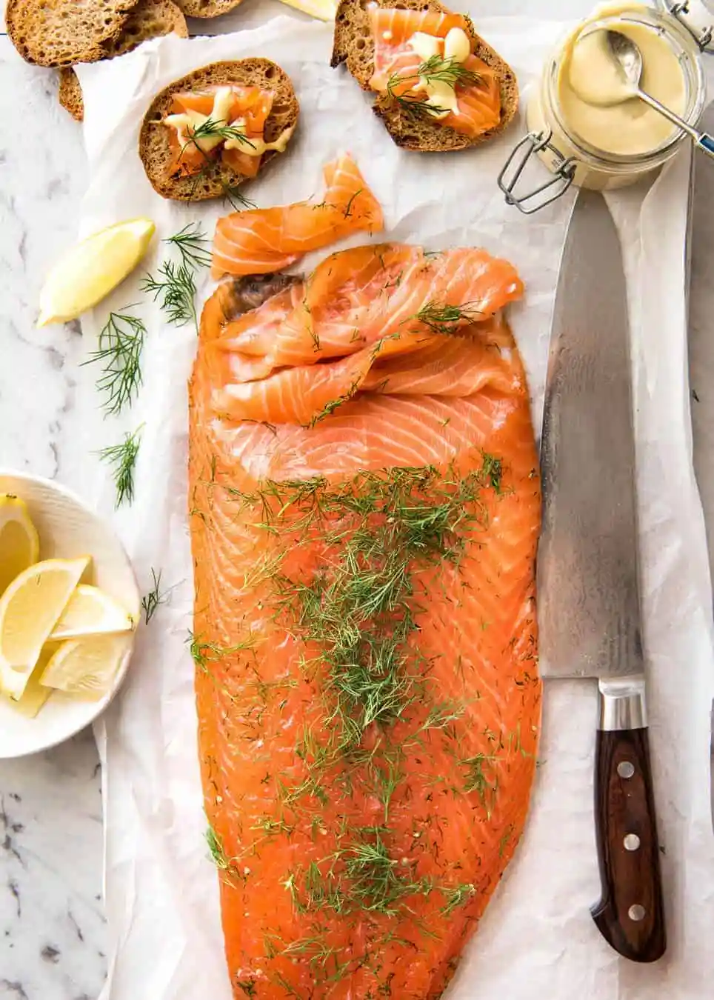

Gravadlax is a real show-stopping centrepiece for a festive spread. Making this Scandi classic is easier than you think with step-by-step help from olive's test kitchen
Time: 15 mins + 24 hours chilling time
Difficulty: Not too hard

Ingredients
1 side salmon, skin on
150g coarse sea salt
150g golden caster sugar
3 tbsp coriander seeds, crushed
1 tbsp black peppercorns, crushed
a small bunch dill, plus extra to finish
3 tbsp Dijon mustard
2 tbsp clear honey
3 tbsp cider vinegar
1 tbsp light muscovado sugar
3 tbsp groundnut oil
a handful dill, chopped
Procedure
To make the cure, whizz the ingredients together in a food processor.
Put a double sheet of clingfilm on a large baking tray and lay the salmon fillet on top, skin-side down. Spread the cure all over.
Wrap the clingfilm tightly around the salmon.
Put another baking tray on top and weight it with tins. Put in the fridge for 24 hours.
Unwrap the salmon, rinse the cure off, pat dry and put the fish on a board.
Cover with a fresh layer of finely chopped dill and pat it down so it sticks.
Carve the salmon into thin slices, starting from the tail end, with the knife at a low angle.
Whisk the sauce ingredients together and serve with the salmon, some rye bread and salad.